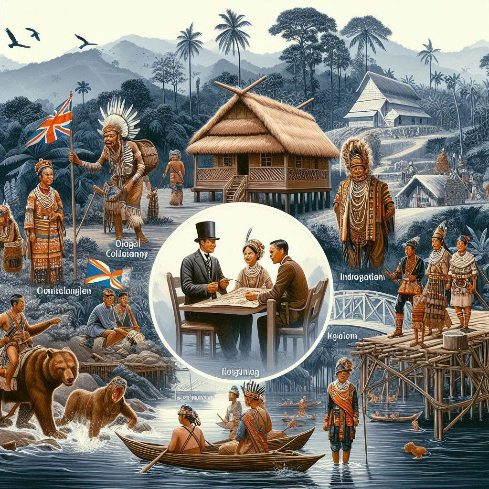
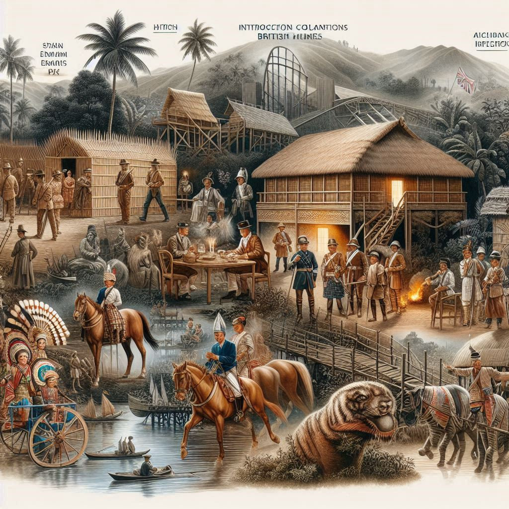

The history of Mizoram, a state in northeastern India, is rich and complex, shaped by its indigenous peoples, colonial encounters, and its path to integration into the Indian Union. Here's an overview of the history of Mizoram:
1. Early History and Indigenous People
- Ancient Mizo History: The history of the Mizo people is rooted in the migration of various indigenous tribes from Southeast Asia. The Mizo, also known as the Lushai, belong to the larger Chin-Kuki-Mizo ethnolinguistic group, which historically inhabited areas that now span Myanmar (Burma), Bangladesh, and parts of India.
- The Mizo people traditionally lived in scattered villages across the region and practiced shifting agriculture (slash-and-burn farming), hunting, and fishing.
- The Mizo tribes had a social structure based on clans and were generally isolated due to the rugged, hilly terrain of the region.
2. Early Colonial Era
- British Influence: The Mizo region came under British colonial influence in the late 19th century. The British first came into contact with the Mizo people during their expansion into the northeastern parts of India.
- Lushai Hills: In 1891, the British annexed the Lushai Hills (modern-day Mizoram) after the Lushai Expedition, a military campaign aimed at curbing the Mizo tribes' raids on the plains of Bengal and Assam. Following the annexation, the British placed the region under direct colonial rule.
- The British colonial administration established the area as part of the Assam Province and took measures to control and pacify the tribes, including introducing a formal system of administration and converting the people to Christianity.
3. Missionary Influence
- Christianity in Mizoram: Christian missionaries, particularly from the American Baptist Missionary Union, played a significant role in the social and cultural transformation of the Mizo people. They arrived in the late 19th century, bringing Christianity, education, and healthcare.
- The majority of the Mizo population converted to Christianity during the British colonial period, which has had a lasting impact on the state's culture, festivals, and social norms.
4. Post-Independence Period
- Mizoram's Integration into India: After India gained independence in 1947, Mizoram remained a part of Assam. The Mizo people, however, were not content with their administrative and political situation.
- In 1954, the Mizo Hill District was created as a separate administrative unit within Assam, recognizing the distinct identity of the Mizo people.
5. Mizo Nationalism and the Struggle for Autonomy
- The Formation of Mizo National Front (MNF): In the 1960s, a political movement for greater autonomy or independence began to gain traction. In 1966, Laldenga, a prominent Mizo leader, led the formation of the Mizo National Front (MNF), which demanded full autonomy and eventually the secession of Mizoram from India. The movement was driven by grievances over the government's handling of economic issues, including food shortages, and the feeling of cultural and political marginalization.
- Mizo Uprising (1966): The MNF launched an armed insurgency against the Indian government in 1966, known as the Mizo Uprising. The insurgency was marked by violence, and it lasted for more than a decade. The Indian Army intervened, and the conflict led to widespread destruction and suffering.
- The Mizo Accord of 1986: After years of conflict and negotiations, the Indian government, led by Prime Minister Rajiv Gandhi, signed the Mizo Accord in 1986 with the MNF, which led to the establishment of Mizoram as a Union Territory within India. This agreement included promises of greater autonomy, the restoration of normalcy, and a focus on socio-economic development.


6. Mizoram Becomes a State
- Statehood (1987): The success of the Mizo Accord paved the way for Mizoram to be granted statehood. On February 20, 1987, Mizoram officially became the 23rd state of India. This was a significant milestone in the region's history, ending years of insurgency and strife.
7. Post-Statehood Era
- Development and Peace: Since gaining statehood, Mizoram has seen significant development in terms of infrastructure, education, and healthcare. The peace process has brought stability to the region, and Mizoram has become one of India's most peaceful states.
- Cultural Revival and Identity: The Mizo people have retained their cultural identity, and the revival of traditional practices, festivals, and the use of the Mizo language has been a key focus in the post-independence era.
- Political Landscape: Mizoram's political landscape has been shaped by the dominance of the Mizo National Front (MNF), which has governed the state for most of the period since its statehood. Other regional and national political parties have also played important roles in the state’s development.
8. Recent Developments
- Economic Growth and Challenges: Mizoram's economy has traditionally been based on agriculture, but recent years have seen efforts to diversify into areas like tourism, horticulture, and manufacturing. However, the state still faces challenges such as unemployment, infrastructure development, and regional disparities.
- Ethnic and Cultural Identity: Mizoram continues to preserve its rich cultural heritage, including the Mizo language, traditional attire, and the practice of traditional festivals. Christianity remains an important part of the state's social fabric.
9. Conclusion
Mizoram’s history is marked by its indigenous roots, British colonial rule, a struggle for autonomy, and eventual integration into the Indian Union. Today, it stands as a peaceful, culturally rich state with a growing economy and a vibrant cultural identity. The lessons learned from Mizoram’s past, especially the resolution of conflict through negotiation and peace-building, are significant for the broader context of India’s northeastern region.